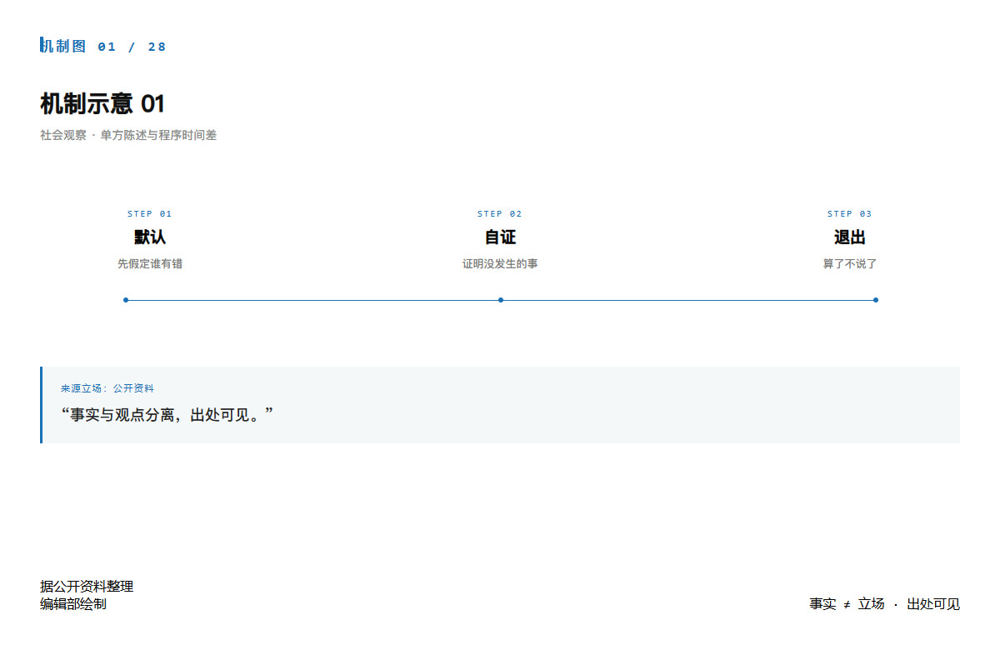

四句话与四年：两份样本
社会观察 · 单方陈述与程序时间差
27 条原话按时间排开，会看到一个东西：责任的主语，在 28 分钟里从「他」挪到「我」。
一场直播连麦，单方陈述，未经另一方证实。照抄原话和进度，删口头语。指控不转述、不评价。态度为何变，有多种解释，这里不裁决。
这事和你有关系。两份样本是同一个结构：一个男人的位置先被钉住，之后无论话怎么说、程序怎么走，都难挪回来。这类视角的处境，藏在时间差里。
04:05「我就觉得我被他耍了。」05:01「我当时就是想吓唬他，我就说，你这样的话，你刚才这个行为，我可以报帽子叔叔。」05:43「而且他不负责任，所以我当时就打了电话。」06:15「我就是想吓吓他，是他不抓住这个机会。」四句话定死位置：责任在男方。
06:41「我没想过后果会这么严重。」07:12「他当时一直挑衅我，我当时脸上也挂不住……我就打了那个电话。」08:12「所以我也是没有办法，我无力回天了当时。」因果仍在男方。
09:13「我跟他母亲已经道过歉了，我说我也不想结果是这样，但也是，也怨我男朋友。是他不负责任。」09:38「他10万块钱，他其实努一把力凑一凑就凑起来了。」还替那个男人算账。
09:51「我也有一部分过错。」10:09「我也后悔。」10:21「我也不想要这样的结果，我只是想让他长个教训。」第一次松口，认下「一部分」，因果仍推给男方。
16:35「他儿子进去，是我有一部分责任，但是他把他那个餐馆倒闭，也落到我头上。」18:41「现在就是关键是在他父母身上。」18:58「我现在就是想挽回我男朋友。」主语混进「我」，那个男人的家庭还被掂量。
19:32「不，姐，我没有那么可怕。我当时真的是一时冲动，没考虑过会是这个结果。」19:50「我真的以为是这样。」被追问之后，开始解释自己不是那种人。
21:31「我如果知道会判3年的话，我肯定不会报。毕竟我跟他谈了3年，不是说一点感情也没有。」21:38「我也不是冷血的人。」这句被剪成切片传开，却不是一开始就有的。
23:05「是，我承认。」23:10「确实，我男朋友现在这样，是我得负主要责任。」23:13「但是现在事情已经发生了，我就想好好过好我的生活。」从「一部分」到「主要责任」，落脚点还是日子，那个男人没台词。
24:20「是我害了他。」25:13「也就是我觉得他大概率会不会跟我在一起了？」26:44「那不姐，你这一说我明白了。」主语换成「我」，不再讨价还价。
27:48「我知道现在这个结果，是我自己该承受的。」28:19「我现在也没其他办法。」整场 28 分钟，没有一句出自那个男人。
📌 四句原话，四个位置
「是他不负责任」→「我也有一部分过错」→「是我得负主要责任」→「是我害了他」。28 分钟，主语从他挪到我。
朱军案只取程序时间线：2018 年长文进入舆论场，几天内完成定性；此后一审、上诉，2021 年 9 月一审，2022 年 8 月二审终审。当事人说，从起诉到二审过去四年。指控不转述，是非以裁判文书为准。
两条时间线并在一起看：叙事轴以小时计，程序轴以年计。空窗期里，后果已执行完——工作停了，关系断了，搜索结果钉在原处。迟到的结论，换不回当初那条内容的位置。被卷进去的男人，那时已不在场。
两份样本里的男人位置不同：一个被钉成「不负责任」，一个被钉了四年。态度会变，程序会走完，位置不会自动撤。这是结构，不是对个案的判断，也不是给男性叙事盖棺。
当事人原话 · 音频进度 24:20
「是我害了他。」
主语换成「我」，只剩承受。

▲ 责任刻度的四句原话与两条时间线（编辑部绘制）
✍️ 听到改口，你会怎么想？
是觉得她想明白了，还是被对话推着走？评论区说说。有用就点赞、点「在看」。
下一篇：对轰和沉默之外，还有第三种位置。
资料来源
《2026.11.11 · 28.8 万彩礼谈崩》附页：27 条逐字引语，按音频进度排列，仅删重复口头语，未改语义；归纳为编辑部所加。
连麦为单方陈述，未经另一方证实。归因不裁决，只采「刻度在移动」这一事实；敏感指控不转述、不评价。
朱军案据公开裁判文书与报道：2018 年长文进入舆论场，2021 年 9 月一审、2022 年 8 月二审终审。只取程序时间线，指控不转述、不评价，是非以裁判文书为准。
社会观察，不站任何性别立场。个案是非不裁决，单方陈述不转述为事实。拆解是为了理解，不是行动指南。